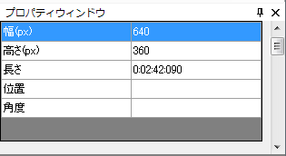
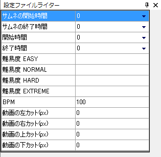
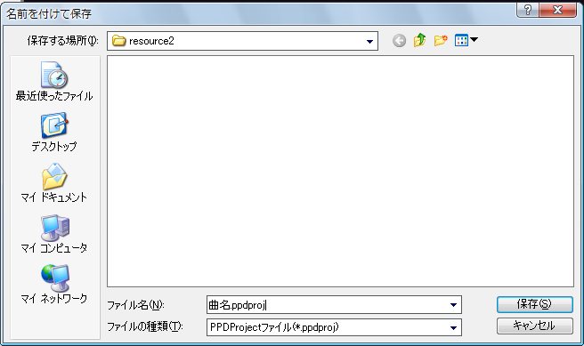

First, measure the BPM of the movie (its song).
BPM is the number of beats per minute, that is, the speed of the song (the larger it is, the faster the tempo).
PPDEditor has a built-in BPM measuring feature called BPM Measurement.
If you can't measure it well, try searching for "song name BPM" on Google or similar.
There is also third-party free software such as "MixMeister BPM Analyzer", which analyzes an mp3 file and calculates the BPM automatically.
However, such values are not always reliable, so check at least once by measuring manually that they are correct.
Now that you have measured the BPM,
enter it into the leftmost text box in the toolbox.
(It is the text box that shows a BPM tooltip when you hover the mouse over it)

Next, set up the movie clipping.
The current movie size is shown in the Property Window.

The PPD window is 16:9 (800*450px).
So you don't need to set up clipping for a 16:9 movie source,
but for other movie sources you need to set it up to keep the aspect ratio.
For example, a common case is a 512*384px movie (4:3 aspect ratio) with black bars at the top and bottom.
In this case, the movie is often 16:9 without the black bars, so set it up to remove them.
First, select Movie → Cut.

The following window appears.

Calculate the height of the black bars to remove.
Let black_height be the height of a black bar, movie_width the width of the movie and movie_height its height.
Then the following equation must hold.
movie_width:movie_height-2*black_height=16:9
⇔16*(movie_height-2*black_height)=9*movie_width
⇔black_height=1/2(movie_height-9/16*movie_width)
...
You can calculate this with the form below.
Enter the black bar height above into Top and Bottom of the Cut window and press OK.
The movie is then clipped and displayed as 16:9.
As another example, you may want to add black bars to the left and right of a 512*384px (4:3) movie source without black bars to keep its (4:3) aspect ratio.
In that case, enter -100 for Left and Right. (Top and Bottom are 0)
Show the Setting File Writer and enter the information.

For the thumbnail start time, thumbnail end time, start time and end time, press the triangle on the right and select "Get from timeline"
to enter the current time of the movie.
The thumbnail start time is when playback starts on the PPD menu screen. The start of the chorus is a good choice.
The thumbnail end time is when playback ends on the PPD menu screen. The end of the chorus is fine.
The start time is when the movie starts in the game. It depends on the movie, but 0 is usually fine.
If the movie starts abruptly, you can delay its start with -1, -2 and so on.
The end time is when the movie ends in the game. The end of the movie is fine.
Set each difficulty as you like. You can specify whatever you want to display. Currently ★×○ (○ is a number) seems common.
You may also decide them before distributing.
Enter the BPM you measured in BPM.
For each cut of the movie, enter the clipping values you set earlier. If they are 0, enter 0 for all of them.
Now save the project once.
If you created the project with New Project, the project already exists, so press Ctrl+S or select File → Overwrite Project.
The following explains how to save if you set things up without using New Project.
Select File → Save Project.

A dialog appears. Save the file as "song name.ppdproj".

From next time, select "Overwrite Project" to overwrite it.
To open the project again, select the saved "song name.ppdproj".
Next, place the marks.
Next